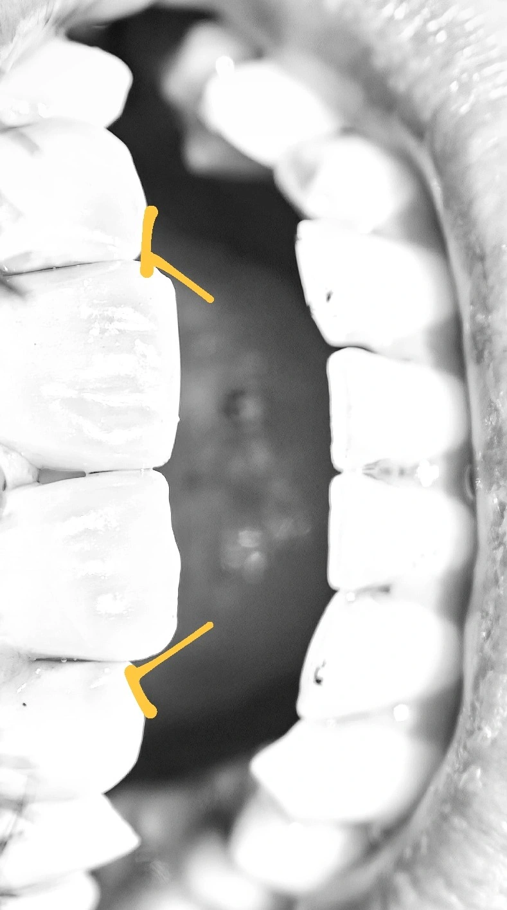

Insight 61 — فریب خطای دید روی کست؛ راهکاری برای تنظیم روکش تکواحدی سانترال
تاریخ انتشار:
آخرین بازبینی:
English

توضیح بالینی
روکشِ تکواحدیِ سانترال کوتاه به نظر میرسید بدون آنکه کوتاه ساخته شده باشد؛ چون لبهی شیبدارِ سانترالِ مجاور و اختلافِ سطحِ لثهی لترالها روی کست خطای دید میساختند — راهحل این بود که تکنسین این لندمارکها را کنار بگذارد و فقط تقارنِ امبراژورهای اینسایزال و دیستالِ دو سانترال را یکسان دربیاورد
این یادداشت دربارهی یک روکش تکواحدی سانترال است که سر یونیت کوتاه به نظر میرسید، بدون اینکه واقعاً کوتاه ساخته شده باشد. چیزی که کار را چند بار بین مطب و لابراتوار برد و برگرداند، لندمارکهایی بود که تکنسین روی کست گچی برای تنظیم طول به آنها تکیه میکرد و هیچکدام متقارن نبودند. در ادامه، منشأ این خطای دید و قانون سادهای که در تماس تلفنی به تکنسین دادم تا از آن عبور کنیم.
-
توضیح بالینی
ساخت روکش تکواحدی سانترال همیشه چالشهای خاص خودش را دارد. در این کیس، بیمار از قبل دیاستم داشت و تمایلی به بستن فضا نشان نداد. وقتی توضیح دادم که روکش جدید (سانترال چپ) قرار است کمی پهنتر شود، بهراحتی پذیرفت. البته این پهنای بیشتر نکتهی اصلی این کیس نیست و فقط برای رفع ابهام از عکس آن را مطرح کردم؛ چالش اصلی جای دیگری خودش را نشان داد. -
مسئله
لابراتوار روکش را ساخت، اما وقتی آن را داخل دهان بیمار امتحان کردم، طولش هنگام صحبت کردن نسبت به خط لب کوتاه به نظر میرسید.
نکته اینجا بود که روکش ساختهشده واقعاً از سانترال سمت راست کوچکتر نبود؛ بلکه لبهی اینسایزال سانترال سمت راست کمی حالت شیبدار داشت. این شیب، در کنار یک مشکل دیگر، کار را حسابی پیچیده کرده بود: لترالهای بیمار هم متقارن نبودند و سطح لثههایشان با هم تفاوت داشت. وقتی بیمار صحبت میکرد، لبههای اینسایزال لترالها کاملاً متناسب و مساوی دیده میشدند، اما این اختلاف سطح لثهها روی کست، خطای دید ایجاد میکرد. -
منطق خطای لابراتوار
تکنسین روی کست گچی، لب بیمار و داینامیک صورت را نمیبیند. او از یک طرف با شیب لبهی سانترال سمت راست مواجه بود و از طرف دیگر، نامتقارن بودن لثهی لترالها او را گیج کرده بود. تکنسین، غافل از اینکه نمایش دندانها نسبت به لب کاملاً یکسان است، سعی میکرد طول روکش را بر اساس این لندمارکهای نامتقارن تنظیم کند و همین باعث کوتاهی کار میشد. یکی دو بار کار بین مطب و لابراتوار رفتوبرگشت داشت، اما مسئله به همین دلایل حل نشد. -
کاری که کردم
در نهایت تلفنی با تکنسین صحبت کردم و یک قانون ساده گذاشتم: «کاری به اندازه لترالها و شیب دندانهای مجاور نداشته باش!»
از او خواستم تمام تمرکزش را روی تقارن امبراژورهای اینسایزال و دیستالِ دو سانترال نسبت به هم بگذارد و آنها را کاملاً یکسان دربیاورد. به او گفتم: «حتی اگر روی کست احساس کردی روکش بلندتر به نظر میرسد، هیچ مسئلهای نیست؛ من خودم داخل دهان تنظیمش میکنم.» -
در این کیس و حرف آخر
با این تغییر رویکرد، کلیت کار پذیرفتنی از آب درآمد و تنها به یک اصلاح بسیار جزئی در امبراژور مزیالی داخل دهان نیاز داشت.
در دندانپزشکی ترمیمی، کست گچی یک محیط استاتیک است. گاهی برای رسیدن به یک نتیجهی داینامیکِ بینقص (مثل هماهنگی با خط لب هنگام صحبت)، باید از فریبهای بصری کست مثل شیب دندان مجاور یا اختلاف لثهها چشمپوشی کنیم. نباید اجازه دهیم عدم تقارن محیطی، تمرکز ما را از تناسب و تقارن اصلیِ سانترالها منحرف کند.
محتوای این صفحه برای استفادهٔ آموزشی دندانپزشکان و دانشجویان دندانپزشکی تهیه شده است.